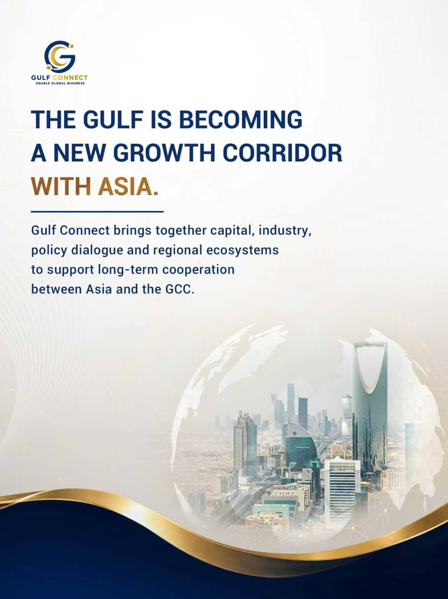
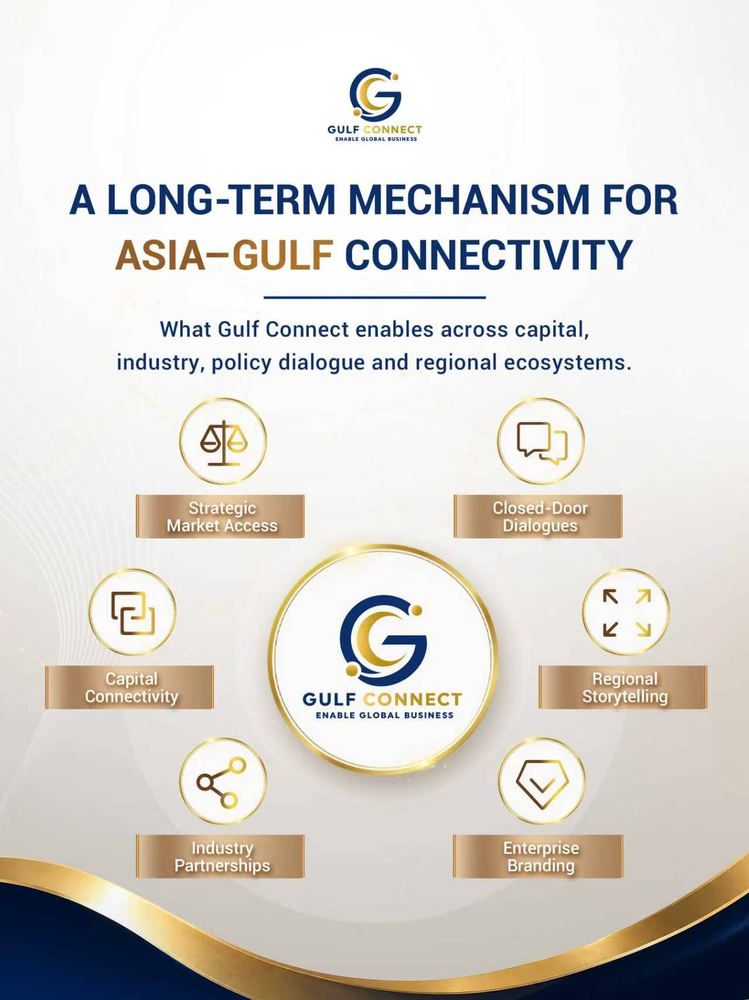
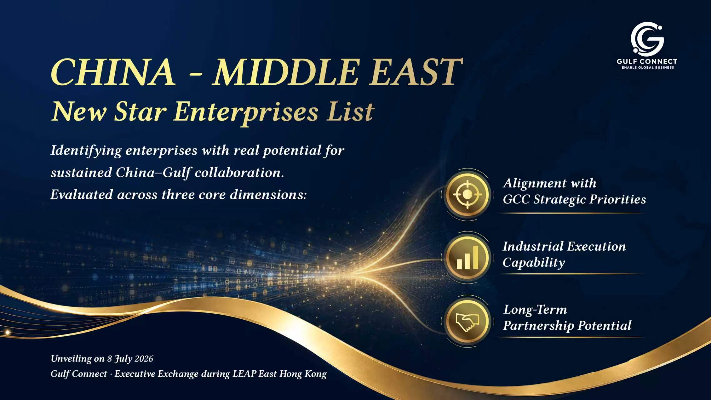

Gulf Connect x LEAP East
Reshape Mindset / Activate Ecosystem / Achieve Milestone / Reach Destination
思維重構 / 生態蓄勢 / 節點突破 / 行者致遠
Gulf Connect is a long-term cross-regional platform jointly initiated by Sina Finance and SuperBridge Council, focused on strengthening connectivity between Asia and the GCC across capital, industry, technology, and regional cooperation.
Built on longstanding regional relationships and institutional connectivity across the Gulf, the platform brings together sovereign wealth funds, industrial groups, policymakers, technology companies, and investors to support deeper strategic engagement between Asia and the GCC.
Through strategic convenings, closed-door exchanges, investor engagement, and ecosystem building, Gulf Connect helps globally oriented companies and investors build trusted relationships and long-term regional relevance.
Gulf Connect is built on the belief that the next phase of global growth will increasingly be shaped by regional ecosystems, institutional trust, and long-term alignment.

Hosted during LEAP East 2026 Hong Kong, Gulf Connect | Executive Exchange organized by Gulf Connect and LEAP East will convene selected participants from sovereign investment institutions, family offices, industrial groups, technology companies, policymakers and cross-border investment communities across Asia and the GCC.
The gathering is designed as a closed-door platform for strategic dialogue, long-term collaboration and regional engagement across:
During the event, Gulf Connect will officially introduce the China-Middle East New Star Enterprises List. Jointly initiated by Gulf Connect, Sina Finance, SuperBridge Council and Ipsos China, the initiative aims to establish a long-term reference framework for Middle Eastern sovereign investors, government institutions and industrial stakeholders seeking to identify globally competitive Chinese enterprises with strong regional growth potential.
The list will focus on companies with international expansion potential, strong industrial capabilities, long-term regional growth opportunities, and alignment with GCC strategic sectors and market priorities.

Speakers listed by session | 嘉宾按议程环节排列
Updated on 0610, Subject to Change
Registration & Executive Networking
Connecting GCC government entities, sovereign wealth funds, industrial capital, technology companies and global investment institutions.
签到与高层交流
面向 GCC 政府机构、主权基金、产业资本、科技企业及全球投资机构。
Special Keynote Address by Distinguished Guest
Welcome remarks and perspectives on the growing strategic importance of Asia-GCC collaboration.
特邀嘉宾开幕致辞
就亚洲与 GCC 合作的重要性及未来发展机遇发表开幕致辞。
Opening Remarks
Introduction to Gulf Connect, the strategic context of LEAP East, and the emerging growth corridor between Asia and the GCC.
全球增长结构重构下的亚洲—海湾新连接
介绍 Gulf Connect 平台、LEAP East 战略背景，以及亚洲与 GCC 之间正在形成的新增长结构。
Special Remarks by LEAP East
Sharing perspectives on LEAP East, its strategic role in connecting Asia and the GCC, and emerging opportunities across technology, investment and innovation.
LEAP East 特别致辞
分享 LEAP East 的战略定位，以及其在连接亚洲与 GCC、促进科技、投资与创新合作中的作用。
Digital Infrastructure & National Platforms
Exploring how digital infrastructure, AI platforms and smart-city technologies are supporting the next phase of growth across GCC markets.
数字基础设施与国家级平台能力
探讨数字基础设施、AI平台及智慧城市技术如何支持 GCC 市场下一阶段发展。
Robotics: The Next Workforce
From mega-projects and logistics networks to advanced manufacturing and smart cities, a new generation of intelligent machines is beginning to reshape how economies are built and operated.
机器人：下一代劳动力
从超级工程、物流网络到先进制造与智慧城市，新一代智能机器正在改变经济体被建设和运营的方式。本环节将探讨机器人与具身智能的崛起，以及其对海湾地区未来发展的意义。
How Do You Build Faster?
The future will not be built the way the past was. The world's most ambitious projects are no longer limited by vision or capital. They are limited by execution. From construction robotics to modular water infrastructure, new approaches are making it possible to deliver complex projects faster, smarter and at greater scale.
未来的建设不会再以过去的方式进行。全球最具雄心的发展项目已经不再受限于愿景或资本，而是受限于执行能力。从建筑机器人到模块化水基础设施，新一代解决方案正在让复杂项目能够更快落地、更高效运营，并实现更大规模的部署。
Trust at the Speed of Business
Global business moves faster than ever. Capital does not. As trade, investment and innovation increasingly connect Asia and the Gulf, the ability to move money efficiently, securely and compliantly is becoming a strategic advantage. This session explores the next generation of financial infrastructure powering cross-border commerce and capital flows.
数字金融与下一代金融基础设施
全球商业活动的速度前所未有。 资金流动却未必如此。随着贸易、投资与创新持续连接亚洲与海湾地区，如何让资金更高效、更安全、更合规地流动，正在成为新的竞争优势。本环节将探讨支撑下一代跨境贸易与资本流动的新型金融基础设施。
The Secret Source of Creating Unicorns
What creates the next generation of breakthrough companies? Behind many of China's most promising technology startups lies a powerful innovation ecosystem connecting universities, researchers, entrepreneurs, investors and industry leaders.
解码中国创新引擎
在众多中国创新企业背后，是一个连接高校、科研机构、创业者、投资人和产业资源的创新生态体系。
China-Middle East New Star Enterprises List Launch
Introducing a new reference point for investors, policymakers and industry leaders seeking to identify the next generation of Chinese companies with long-term relevance to Gulf markets.
《中国－中东出海新星企业榜单》发布
为投资机构、政府决策者及产业领袖提供一个识别下一代中国创新企业的重要参考，聚焦最具长期合作潜力和海湾市场发展价值的企业。
The Future of Manufacturing Is About All Three
For decades, industry has accepted a simple rule: If something becomes lighter, it becomes weaker. If it becomes stronger, it becomes more expensive. New approaches in industrial manufacturing are showing that it is possible to overcome this trade-off. By combining flexible, modular production systems with advanced forming and precision engineering, industrial projects can be delivered faster, safer, and at scale. As nations and companies in the Gulf invest in infrastructure, industrial facilities, and large-scale projects, understanding how these methods improve efficiency and reliability becomes increasingly relevant.
更轻、更强、更便宜: 下一代制造业的竞争
几十年来，制造业始终遵循一个简单逻辑：更轻，往往意味着更脆弱。更强，通常意味着更昂贵。新一代工业制造方法表明，这种权衡可以被打破。通过柔性、模块化的生产体系结合先进成型与精密制造技术，工业项目可以实现更快、更安全、可规模化的落地。随着海湾地区持续投资基础设施、工业设施与大型项目，理解这些方法如何提升效率和可靠性，对于规划和执行下一代产业建设至关重要。
Global Capital & The Next Generation of Innovation
全球资本与下一代产业机会
Discussing how global capital is evaluating hard-tech innovation, and the role of Asia in shaping the next generation of industrial and AI growth.
探讨全球资本如何看待硬科技创新，以及亚洲在下一代产业与 AI 发展中的角色。
Closed-door Strategic Networking
Facilitating targeted conversations between investors, policymakers, industrial leaders and technology innovators.
定向闭门交流
促进投资机构、政策制定者、产业领袖与科技创新企业之间的定向交流。
Invitation-only Executive Exchange. Register your interest today.